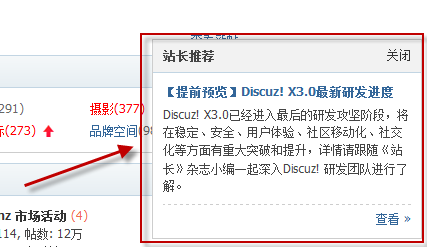

其他模块
站点公告
放在首页、帖子列表页帖子列表的顶部显示的公告，用于通知所有用户一些信息，管理员可后台添加（运营->站点公告），多条前台滚动显示
站点广告
统中内置的16种广告位，站长可以自由选择添加任何一种形式的广告位，选择之后再进行设置即可；在运营中需要注意的是，不同的广告位有其不同的展现方式和价值体现，比如全局页头通栏广告最大的特点是醒目，能让用户在打开页面的第一时间看到，适合做品牌的推广；而论坛、群组的帖内广告、门户文章列表广告等则适合特定内容的推广，不但能引起用户对广告内容的关注，还能增加网站PV；每种广告位的展现方式和价值分析都可在后台功能处查看；除了内置的广告位，站长还可以添加自定义广告位，即方便又灵活
站点帮助
用户登录站点，特别是新手用户，一时之间很难迅速找到自己需要的内容，但是不知道去哪里求助，找谁求助，怎么求助？而设立一个分门别类、层次清晰的“帮助系统”就很有效，能起到引导用户，为用户解惑的作用（在后台 运营->站点帮助设置）
站长推荐
以浮窗形式显示在页面右下角，既不影响用户浏览页面的其他内容，又能很明显的吸引用户的注意力，使得焦点信息在短时间内迅速得到网站用户的关注。如下图所示：
友情链接
友情链接是一种网站之间的简单合作形式，即分别在自己的网站上以文字、图片或其他形式的载体链接到对方的网站